Ten design generations on the same functional scope — 359 available vehicles, every column, filter, action and state of the current page — converging on two candidates — and one idea from the start that came back.
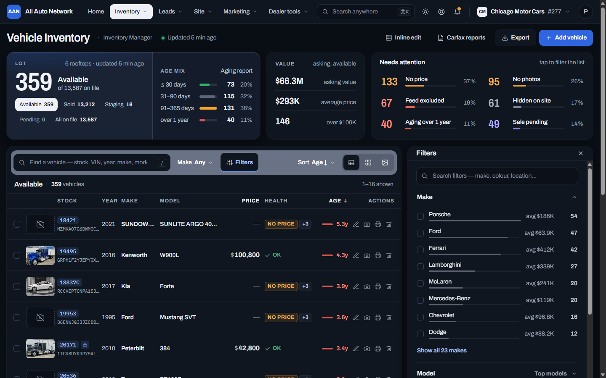
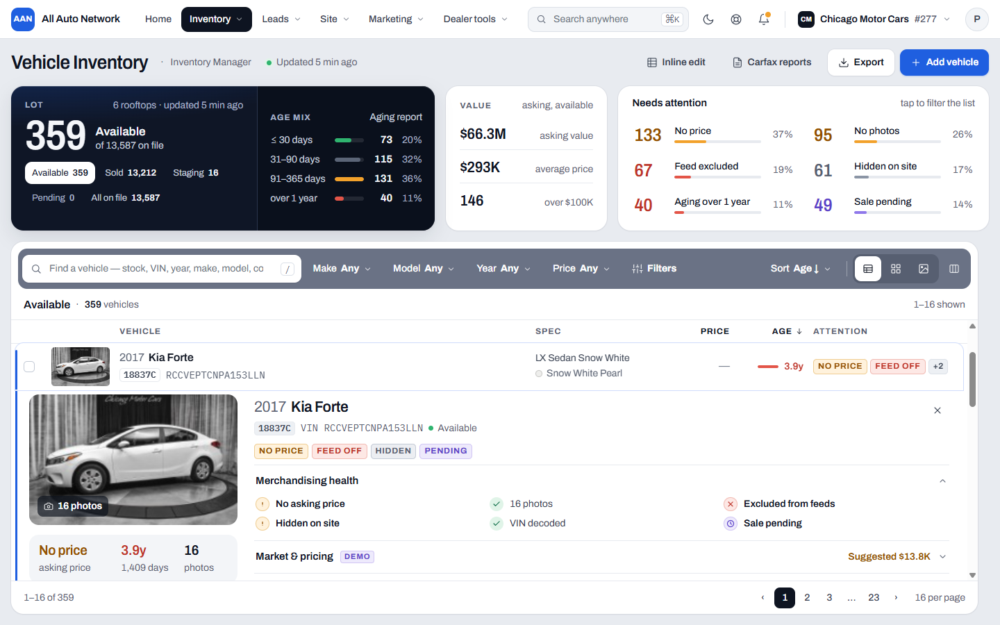
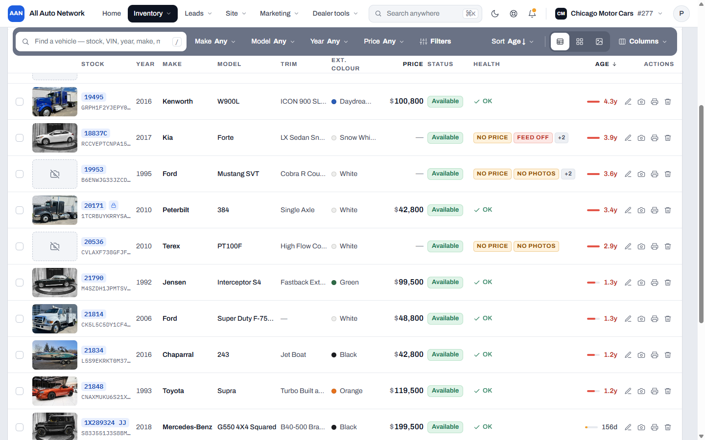
Both keep AAN's platform navigation, the full row anatomy, light and dark themes. They differ in where the lot intelligence lives and how a vehicle opens.
Heavy-top overview · vehicle opens in place
The lot's intelligence sits above the list as a bento of unequal weight — one dominant Lot object, a Value module, a Needs-attention queue — each a dark tile lit from a different edge. The inventory runs full width beneath it. A vehicle never leaves the list: its row turns into a tab and a detail sheet unfolds under it, with the deeper sections as an accordion.
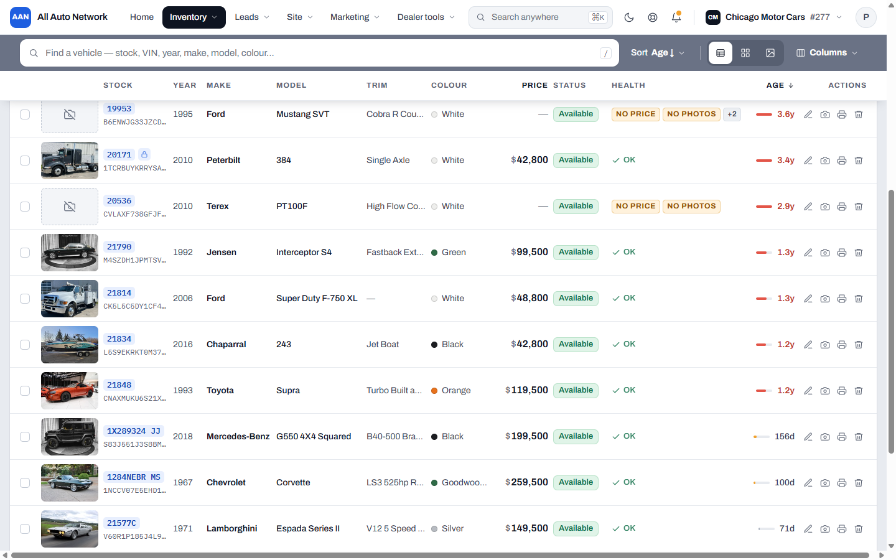
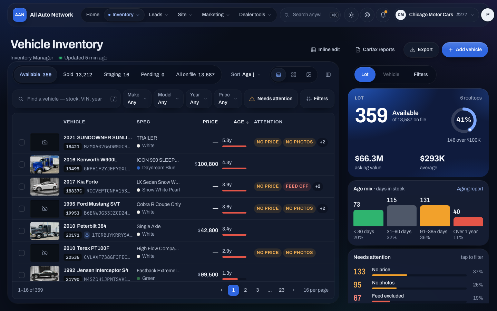
One plane that switches · the list never reflows
Built for exotic and supercar dealers on the same functional scope. The lot intelligence, the selected vehicle and the filters share one context plane beside the list: selecting a vehicle swaps the plane's content instead of pushing the table around, so the list stays exactly where the eye left it. Analytics live inside the workflow — lot value and aging in the Lot plane, comparable market in the Vehicle plane.
Same data, same rows, same themes. The decision is about attention: intelligence above the list and the vehicle inline, or one context plane beside a list that never moves.
| A · Bento Command (Gen 10) | B · Context Plane (Gen 9) | |
|---|---|---|
| Lot intelligence | Bento of three dark tiles above the list; scrolls away, list takes the screen | Lives in the context plane beside the list; swaps with Vehicle and Filters |
| Opening a vehicle | Row becomes a tab, sheet unfolds beneath it; accordion for depth | The plane switches to the vehicle in place; nothing else moves |
| List width | Full width — Trim and Colour always visible | Fixed beside the plane — never changes when you select or filter |
| Find & filter | Wide search band, sticky; quick facets on the scope line; Filters dock | Command band; Filters take over the plane with facet counts |
| Scrolling | Whole page scrolls; band and column header stick under the nav | List scrolls inside its sheet; the plane stays fixed |
| Best for | Working through the list — long sessions, many rows, keyboard | Exotic and supercar lots — fewer cars, deeper per-car context |
Every generation is kept exactly as reviewed. What each one contributed — or why it was set aside.
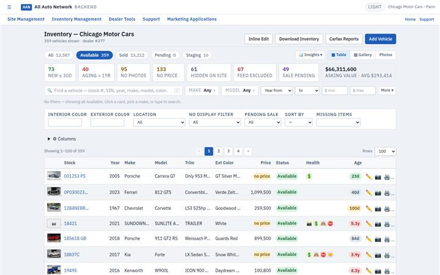
Static 1440 capture of the live page, Available lane, 359 vehicles — the functional specification for every redesign.
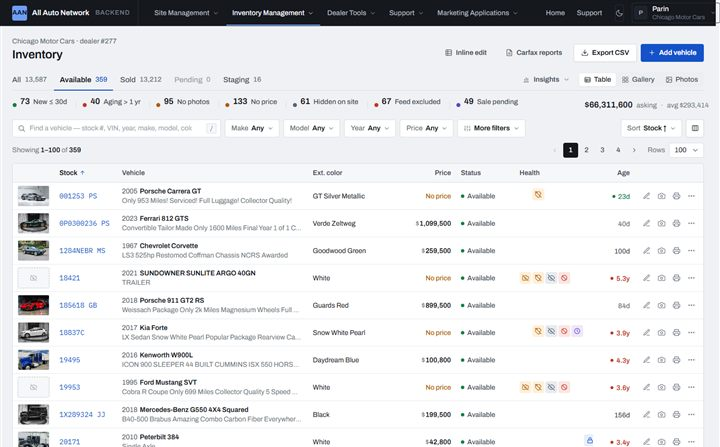
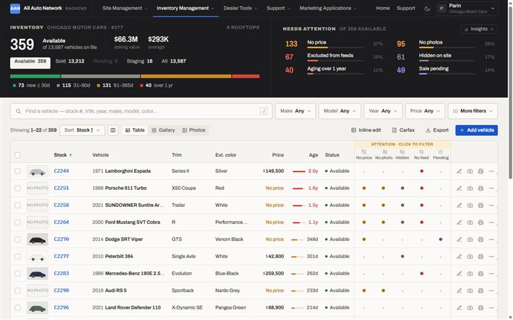
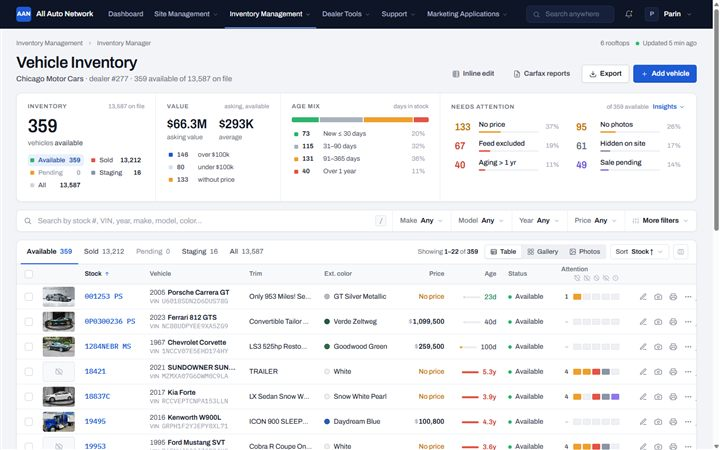
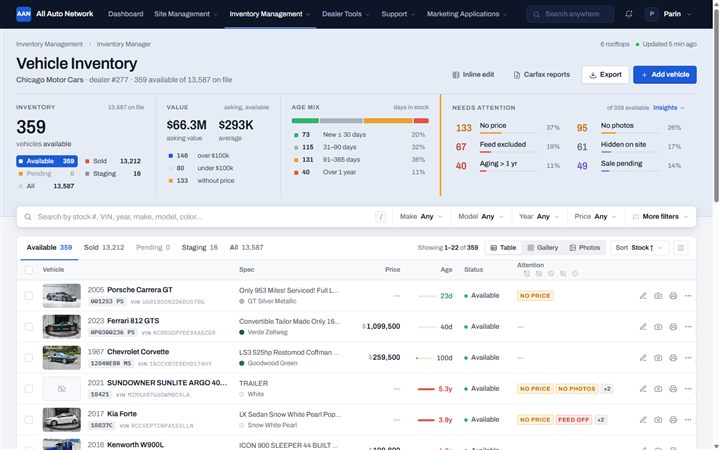
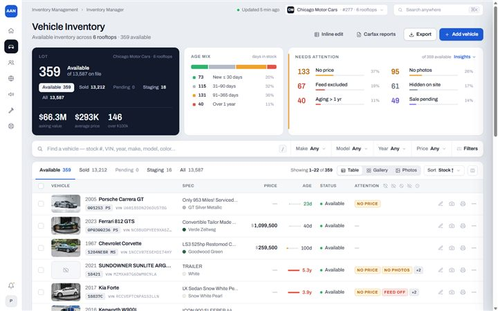
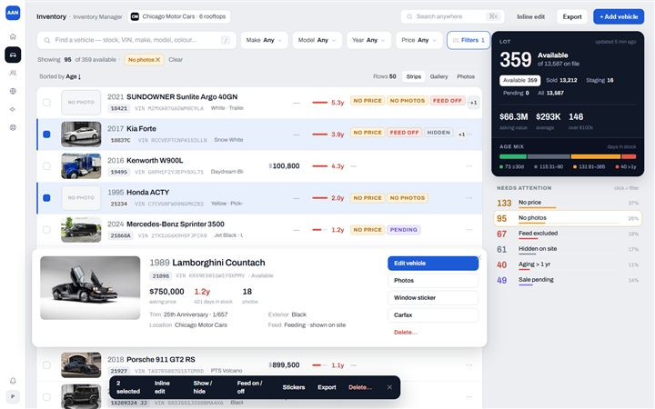
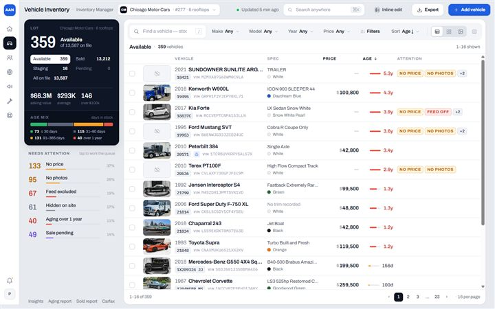
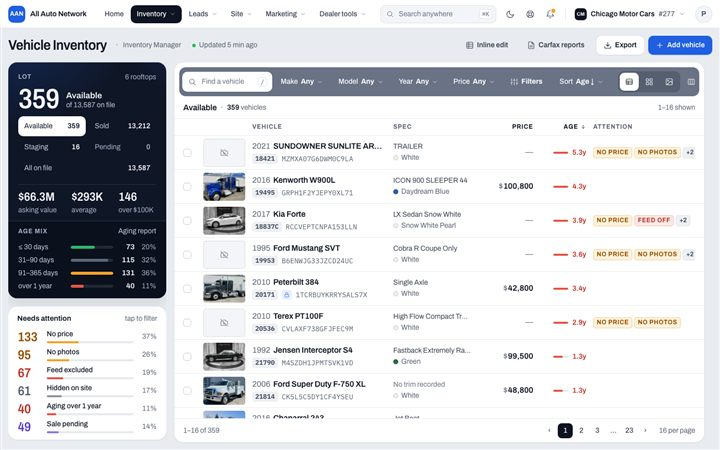
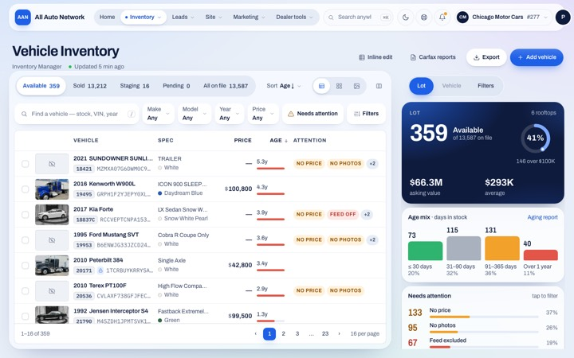
Two questions the current page leaves open, with a proposal and the rule set. Gen 10 already renders every case on demo cars.
Some dealers list a monthly lease next to the asking price; most don't, and a car can have either, both or neither. Where does it live, and how do we show it without stretching every row for the few that have one?
Clients type things into the price that are not an asking price: the MSRP itself, "$5,000 OFF", "Call", "Sale". Today it is one free field, so the list, the feeds and the filters cannot tell them apart. How do we show what the client meant without changing what they typed?
{kind=link}
{kind=link}
{kind=link}
{kind=link}
{kind=link}
{kind=link}
{kind=link}
{kind=link}
{kind=link}
{kind=link}
{kind=link}
{kind=link}
{kind=link}
{kind=link}
{kind=link}
{kind=link}
{kind=link}
{kind=link}